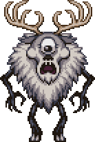
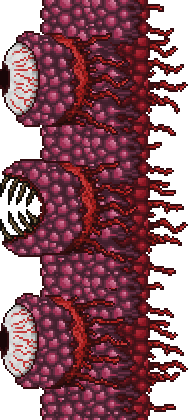
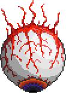
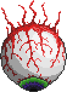

Циклоп олень
Циклоп-олень — Босс, добавленный в обновлении-кроссовере Terraria x Don’t Starve Together 1.4.3. Вызывается при помощи Олене-штуки. Вызвать можно только в снежном биоме. Также если у игрока 200 единиц здоровья, более 9 единиц защиты, он появится сам в Полночь во время Метели в Снежном биоме. Может ударять руками о землю вызывая ледяные шипы проходящие по поверхности и подкидывать куски земли в небо, а также постоянно вызывает теневые руки наравящиеся ударить игрока. Если игрок уйдет от Циклопа-оленя на далёкое расстояние то войдет в режим ярости и будет неуязвим.
Стена плоти
Стена плоти — ключевой босс игры, представляет собой мясную стену высотой во весь мир. Это главный дохардмодный босс, после победы над ним мир переходит в хардмод. Призывается после падения в лаву в аду куклы вуду гида, при этом сам гид должен быть жив. Также можно вызвать если Гид упадёт и сгорит в лаве в аду. Стена плоти движется в одну сторону в быстром темпе (чем меньше у нее жизней, тем быстрее она движется), заставляя сражаться с ней, атакуя и убегая одновременно. К слову, игрок может быть только перед стеной плоти. Иначе она откинет его к себе вперед нанеся большой урон.
Королева слизней
Королева слизней — Усиленная версия Короля слизней, выглядит как большой розовый слизень с тиарой на голове и кристалом внутри. Призывается с помощью Желатинового кристалла. В первой фазе прыгает и телепортируется к игроку призывая слизней-помощников, во второй фазе отрастит крылья и начнёт летать около игрока. Призвать её можно только в святых землях, но сражаться в любом биоме. Из неё выпадают части Кристальной брони ассасина, Желатиновое седло и Большие лечебные зелья

Близнецы
Близнецы — Два Механических глаза, усиленный аналог Глаза Ктулху. Они связаны нитью из плоти и отлично дополняют друг друга, стреляя лазером и проклятым огнем, а также тараня игрока. Их можно вызвать при помощи Механического глаза, а также они могут прийти сами после сообщения "Эта ночь будет ужасна"
 